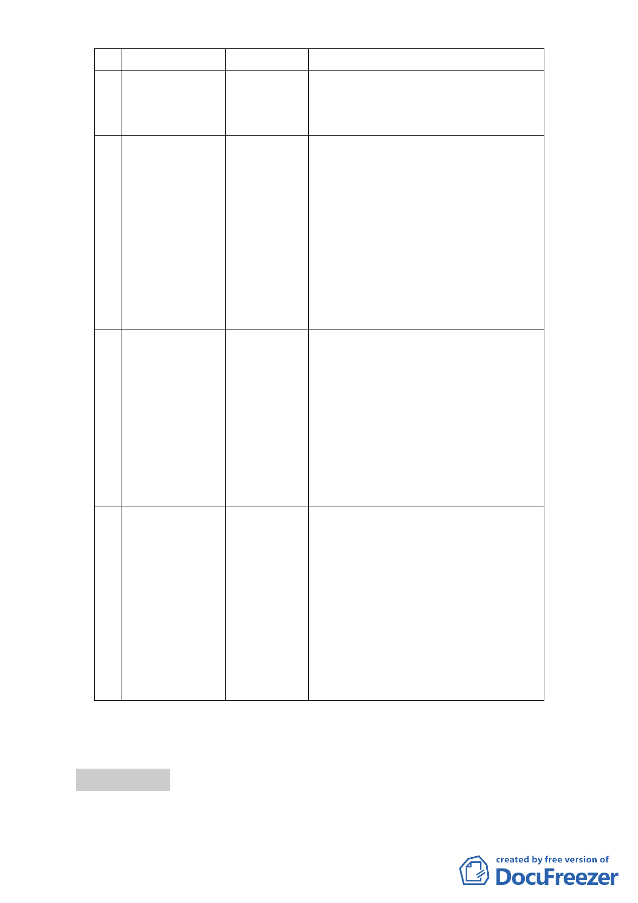

案 名召 集 人小 組 成 員
主要計畫及擬定
暨劃定都市更新
地區細部計畫案
8 變更臺北市文山
區木柵段三小段
623 地號等 27 筆
土地第三種住宅
區為第三種住宅
區（特）暨修訂
木柵段三小段
680 地號等 11 筆
第一種商業區
（特）土地使用
分區管制細部計
畫案
9 變更臺北市文山
區老泉里三小段
358 地號等 5 筆
土地保護區為文
化景觀保存區主
要計畫案
擬定臺北市文化
區「優人神鼓山
上劇場」文化景
觀保存區細部計
畫案
10 變更臺北市內湖
區成功路 5 段大
湖公園北側部分
保護區及道路用
地為社會福利特
定專用區主要計
畫案
擬定臺北市內湖
區成功路 5 段大
湖公園北側社會
福利特定專用區
細部計畫案
張委員桂林
林委員楨家
辛委員晚教
辛委員晚教、陳委員小紅、邱委員大展、
林委員志盈、張委員培義、許委員俊美、
陳委員春銅
辛委員晚教、陳委員小紅、姚委員仁喜、
王委員惠君、李委員永展、邱委員大展、
林委員志盈、張委員培義、許委員俊美
張委員桂林、陳委員小紅、林委員楨家、
黃委員台生、李委員永展、許委員俊美、
邱委員大展、陳委員春銅
報告事項 二
案由：為辦理「修訂『變更臺北市文山區指南里、老泉里部分保
-4-